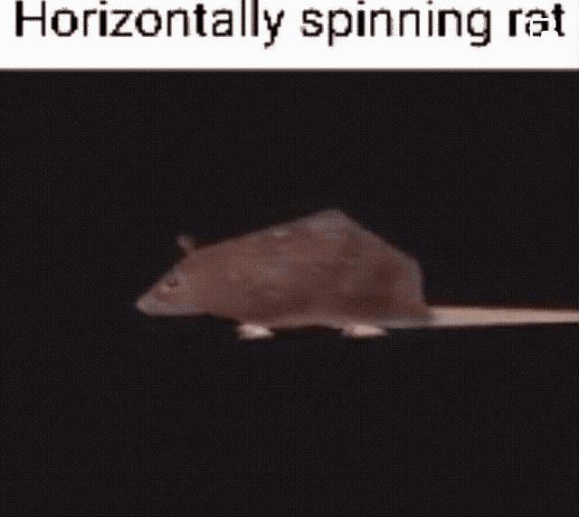
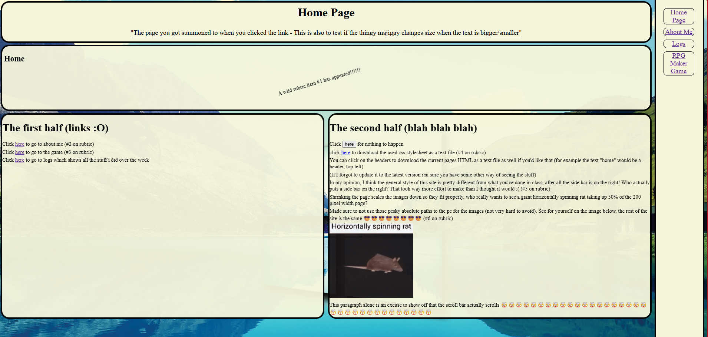

Home Page
"The page you got summoned to when you clicked the link - This is also to test if the thingy majiggy changes size when the text is bigger/smaller"
"The page you got summoned to when you clicked the link - This is also to test if the thingy majiggy changes size when the text is bigger/smaller"
A wild rubric item #1 has appeared!!!!!!
Click here to go to about me (#2 on rubric)
Click here to go to the game (#3 on rubric)
Click here to go to logs which shows all the stuff i did over the week
Click for nothing to happen
click here to download the used css stylesheet as a text file (#4 on rubric)
You can click on the headers to download the current pages HTML as a text file as well if you'd like that (for example the text "home" would be a header, top left)
(If I forgot to update it to the latest version i'm sure you have some other way of seeing the stuff)
In my opinion, I think the general style of this site is pretty different from what you've done in class, after all the side bar is on the right! Who actually puts a side bar on the right? That took way more effort to make than I thought it would ;( (#5 on rubric)
Shrinking the page scales the images down so they fit properly, who really wants to see a giant horizontally spinning rat taking up 50% of the 200 pixel width page?
Made sure to not use those pesky absolute paths to the pc for the images (not very hard to avoid). See for yourself on the image below, the rest of the site is the same 😎😎😎😎😎😎😎😎 (#6 on rubric)
This paragraph alone is an excuse to show off that the scroll bar actually scrolls 🤯🤯🤯🤯🤯🤯🤯🤯🤯🤯🤯🤯🤯🤯🤯🤯🤯🤯🤯🤯🤯🤯🤯🤯🤯🤯🤯🤯🤯🤯🤯🤯🤯🤯
Github decided to not like the split tabs thing even though it seemed to work just fine on VS code, so I couldn't include it in here. Sorry. Maybe theres an easy fix to it that I just don't know, but it's not necessary. Here's what it would have looked like though if you were wondering. 